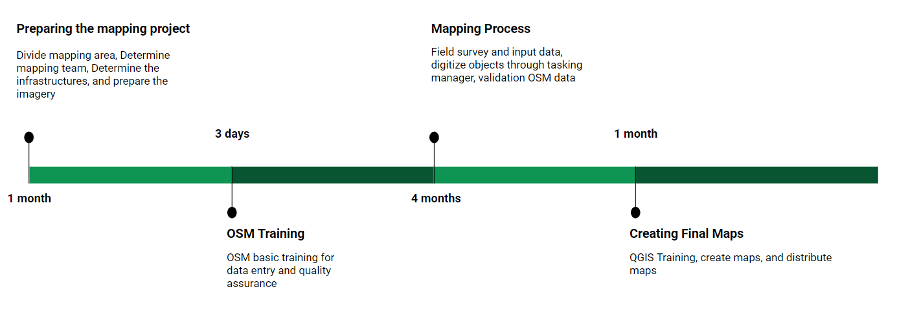
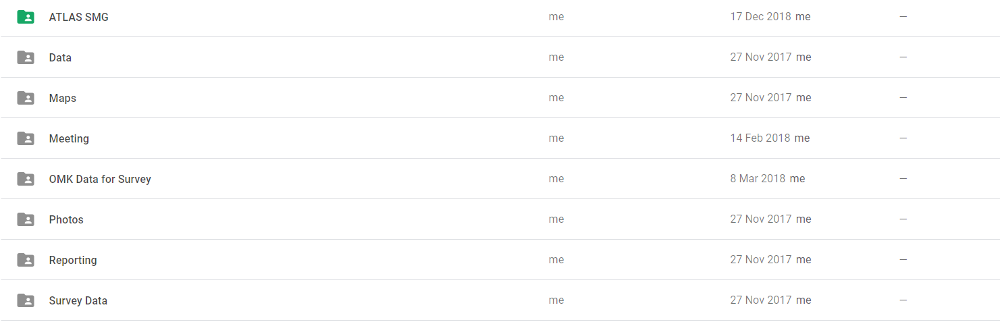
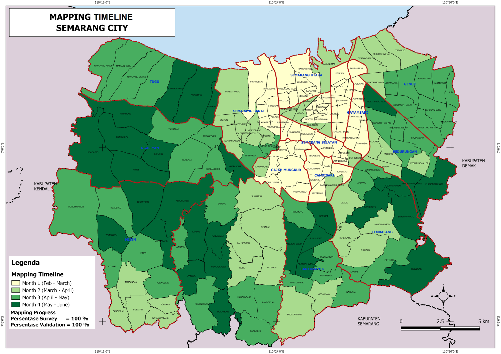
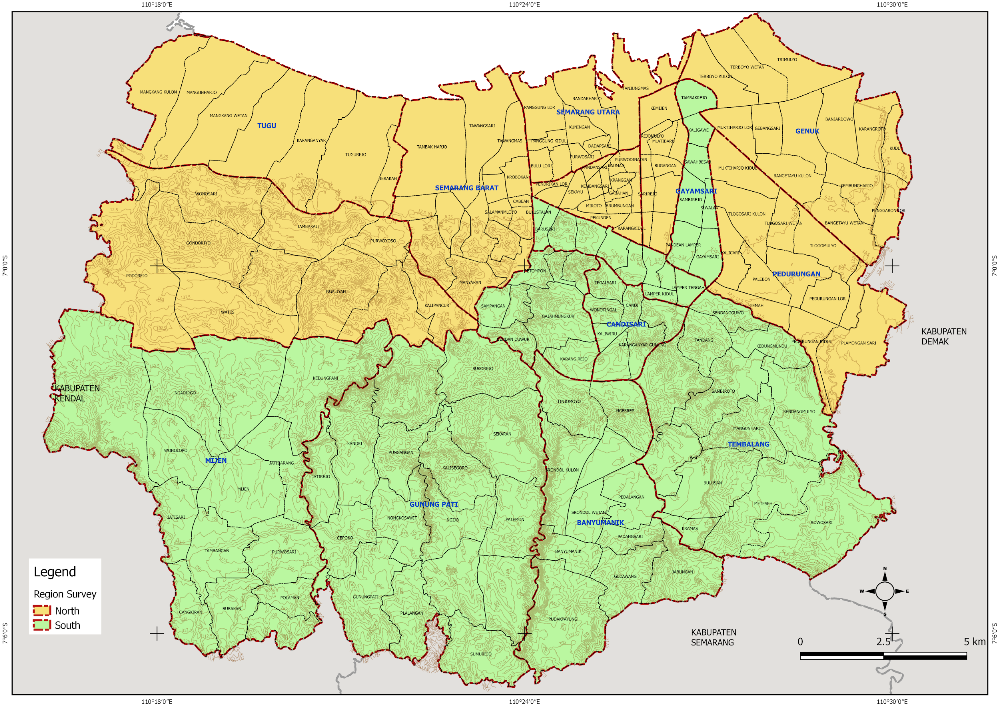
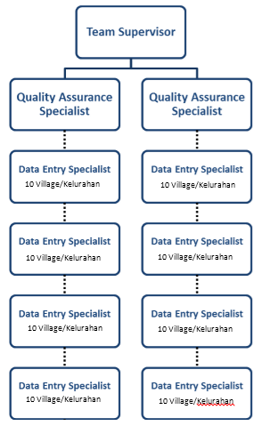

The Mapping Methodology with OpenStreetMap
Download page as PDFObjectives:
- To be able to explain how to create a timeline for mapping activity
- To be able to explain how to create a folder for each team mapping
- To be able to explain how to divide the survey area based on the administrative boundary
- To be able to explain how to create team mapping effectively
Planning a mapping project requires an appropriate and efficient survey methodology to achieve the target and purpose. Indicators that need to be considered in making survey methodologies include: survey area, number of team mapping, number of objects collected, and project funding. If the area is larger and the number of objects collected is increasing, the funding of the project will also increase.
The mapping project will be carried out by a team mapping divided into 3 (three) roles:
- Mapping Supervisor = organize, manage and supervise mapping projects, prepare equipment field surveys, create a report the survey progress, and check the quality and the quantity of data that validated by Quality Assurance
- Quality Assurance = Validate the quality and the quantity of data from data entry and manage a team of data entry
- Data Entry = Collect the object from field survey and entry the data to OSM. Also, digitize the buildings and roads
I. Create a Framework for Mapping Activity
We will create a framework for a mapping project that integrates with indicators. The framework can reference in the implementation of the mapping project that will be monitored by Mapping Supervisor and Quality Assurance. These are the guideline of the framework:
- Preparing the mapping projects
- Determine the team mapping of data entry and quality assurance
- OSM Training to team mapping
- Mapping process and mapathon activity
- QGIS Training for the staff mapping
- Creating the final maps
An example, this image below is arranged as a framework for mapping in Semarang City. Semarang City has 373,8 km2 area with 16 data entry and 4 quality assurance. The infrastructures were collected 58 categories consists of roads, rivers, embankment, and public facilities. The mapping project has finished for 6 months.

The mapping framework
a. OSM and QGIS Training for Team Mapping
The training to explain about mapping methodology, using tools of field survey, and creating final maps. These are training material that you have to prepare before starting the project:
OSM Basic Training for Data Entry and Quality Assurance
The training was held for three days with the purpose to use tools of field survey and how to input OSM data.
These are the training material:
- Getting started with OSM
- Using JOSM
- Using Tools Field Survey
- Field Survey Mapping
- Using Tasking Manager
- Adding OSM Data using JOSM
- Creating the administrative boundary using JOSM
- Download OSM Data with Export Tool
Quality Data Training for Quality Assurance
The training was held for two days that the purpose of validated OSM data by results data entry. The training material in lists below:
- Validation OSM Data using JOSM
- Validation OSM Data using Tasking Manager
QGIS Training for Data Entry and Quality Assurance
The training was held for one day that the purpose to create the final maps. The training material in lists below:
Download dan Install QGIS
Preparing the data
Create Final Map Using Map Composer
b. Preparing the Mapathon Activity
A mapathon is a coordinated mapping event using a Tasking Manager. The public is invited to make online map improvements in their local area to improve coverage and to help disaster risk assessment and energy management. Mapathons use an online site for storing map data, for example, OpenStreetMap. A mapathon is organized by a respective organization or a non-profit organization or local government.
Mapathons are often held inside (armchair mapping) in a room with strong Wi-Fi for simultaneous access, assisted by satellite imagery. We can collaborate with local universities to conduct the mapathon. We are usually conducting the mapathon in three days, involve one-day training and two days mapping.
II. Create a Timeline for Mapping Activity
Mapping timeline is different from the framework, in this section you will be focused on manage and oversee the implementation of a field survey. In outline, mapping timeline divide into three-part:
a. Before Field Survey
In this part, the mapping supervisor has to prepare survey equipment. The survey equipment consists of GPS, smartphone, and maps. Each smartphone will be installed by open source android application, there are ODK Collect, OpenMapKit (OMK), and OSMTrackers. The lists task of mapping activities before field survey that mapping supervisor do:
- Create the MBTiles with base map imagery
- Create maps with administrative boundary
- Create guideline to mapping activity
Example Table for monitory the mapping activities before field survey
| No | Timeline | Data Entry | Municipality | Total of Villages | Village Name | Total RW | MBTiles | Maps (imagery) | Maps (OSM) |
|---|---|---|---|---|---|---|---|---|---|
| 1 | Feb - Mar | A | Candisari | 3 | Candi | 11 | v | v | v |
| 100% Dipetakan | Jatingaleh | 10 | v | v | v | ||||
| 100% Divalidasi | Jomblang | 10 | v | v | v | ||||
| 2 | Feb - Mar | B | Banyumanik | 3 | Sumurboto | 5 | v | v | v |
| 100% Dipetakan | Ngesrep | 11 | v | v | v | ||||
| 100% Divalidasi | Gedawang | 10 | v | v | v |
*Filled by Mapping Supervisor
b. Mapping
Every mapping staff has a role in the implementation field survey. There are parts of roles:
- Data Entry = prepare the smartphone, collect the objects, input the survey data, and upload in OSM, digitize buildings and roads, and create the final maps.
- Quality Assurance = ensure and manage the quality of data uploaded by data entry, monitory mapping activity in field, and manage the mapping strategy with data entry.
- Mapping Supervisor = ensure the quality and quantity of survey data, monitory whole implementation the mapping activity adjusted to timeline.
Example Table on Mapping Process
| mbtiles | clear file manager | Survey | Getting RW Boundary | Survey Infrastructure | Shelters | Route | Upload track | Send form | Objects | RW | Shelters and Route | Validation |
|---|---|---|---|---|---|---|---|---|---|---|---|---|
| v | v | 1,5-6 Mar 2018 | 1 Mar 2018 | v | v | x | v | v | v | v | v | 26 Mar 2018 |
| v | v | 12 Feb 2018 | 12 Feb 2018 | v | v | x | v | v | v | v | v | 14, 19 Feb 2018 |
| v | v | 8,12-14 Mar 2018 | 12 Mar 2018 | v | v | x | v | v | v | v | v | 27-28 Mar 2018 |
c. After Mapping Activity
If the mapping activities have finished, mapping supervisor and quality assurance have to ensure whole the survey data will be uploaded into OSM and validated. The next step is to create and prepare final maps for feedback to the government that involved in the mapping process.
Example of the table after mapping activity
| Validate the admin boundary | Data Quantity | Data Quality | Print and Distribute the final maps |
|---|---|---|---|
| v | v | v | v |
| v | v | v | v |
| v | v | v | v |
You can download the complete table in this link https://tinyurl.com/timeline-pemetaan
III. Save and Share the Survey Data
We need the folder directory to save and share the data that folder will be organized and easy to share. The results of the mapping project are spatial data uploaded in OpenStreetMap. The data can be downloaded and saved in other format spatial data with your necessary.
We can upload and publish the data using Google Drive because everyone has a Gmail account and we usually use Google Drive in working. There is the example folder that we can use to save the data:
Example Folder in Google Drive
| Folder Name | Description |
|---|---|
| Timeline | Framework and table of the timeline the mapping activity |
| Training | Training agenda and training material |
| Staff Mapping | Profile of staff mapping (data entry, quality assurance, and mapping supervisor) |
| Data Survey | The results of mapping consist of OMK Data, ODK Collect Data, GPS Tracks, and final data |
| Documentation | Photos and videos of mapping activity |
| Maps | Maps of survey, progress, final results |
| Report | The monthly report to mapping activities |
| Data Quality | The results of calculating the data quality |
| Data Quantity | The results of calculating the data quantity |
| OMK Equipment | MBTiles of base map imagery |
The digital data will be uploaded in each folder according to the mapping process so that we get the backup data and avoid losing the data.

The folder in Google Drive
IV. Divide the Area Survey based on the Administrative Boundary
We will determine the factors that affect in divide the area survey it was related to characteristics area. The characteristics are an area, topography, and land use. We can divide the area based on village-level the administrative boundary. In the next step, we can start the analysis to divide the area by identifying the characteristics of the village-level.
In this case, mapping in Semarang City has 373,8 km2 area in 16 sub-districts and 177 villages. Semarang City has a unique topography, it is a hill in South Semarang and coastal area in North Semarang. The North area is the central government, business, and residential area. While the south Semarang is the development of residential, education, and farmland. Therefore, the north Semarang has many infrastructures and a high density than the south Semarang area.
The analysis topography can affect route the field survey because each region has obstacles area. The other factor is the weather on the implementation field survey, rain season can be a challenge in flood areas. If heavy rain, we can directive the data entry to survey in a location not flood affected or they can digitize buildings and roads in the office.
If we already know about the factors that impact the mapping timeline, we can divide the area survey based on the administrative boundary. For example, one sub-district can be finished in a month by one team data entry. Based on the analysis, the mapping project in Semarang City has finished in four-month with 16 data entry.
We can start the mapping area with nearby form the office because it is easy to coordinate between data entry and quality assurance about field survey. If data entry found the problem in the field likely problem with their smartphone or permission letter in the village office, they can ask the quality assurance or back to the office and resolve the problem with the team.

Mapping Timeline in Semarang City
In the map below, we can divide the area into two sections based on characteristics area, so that we need two mapping supervisor to manage and monitory the mapping activities

Divide Area in Mapping Project
Example Table of Divide Area Survey
| Timeline | Sub-District | Mapping Supervisor North | Mapping Supervisor South |
|---|---|---|---|
| Stage 1 (1,5 Months) | Near from the office less distance 20 km | Semarang Barat | Candisari |
| Semarang Tengah | Semarang Selatan | ||
| Semarang Timur | Gayamsari | ||
| Semarang Utara | Gajah Mungkur | ||
| Stage 2 (2,5 Months) | The distance more than 20 km from the office | Ngaliyan | Banyumanik |
| Pedurungan | Tembalang | ||
| Tugu | Mijen | ||
| Genuk | Gunung Pati |
V. Create Team Mapping
We will choose the team data entry based on their knowledge about the area, it is a strategy to quickly in the understanding survey area. We can give the list question about the area in the recruitment process data entry.

Team Mapping
Example table of Team Mapping based on Survey Area
| Mapping Supervisor | Quality Assurance | Data Entry | Sub-districts | Village | Total Villages |
|---|---|---|---|---|---|
| Mapping Supervisor 1 | QA1 | DE1 | Candisari | 7 | 21 |
| DE2 | Mijen | 14 | |||
| DE3 | Semarang Selatan | 10 | |||
| DE4 | Banyumanik | 11 | |||
| QA2 | DE5 | Gayamsari | 7 | 23 | |
| DE6 | Gunung Pati | 16 | |||
| DE7 | Gajah Mungkur | 8 | 20 | ||
| DE8 | Tembalang | 12 | |||
| Mapping Supervisor 2 | QA3 | DE9 | Semarang Barat | 16 | 23 |
| DE10 | Tugu | 7 | |||
| DE11 | Semarang Tengah | 15 | 25 | ||
| DE12 | Ngaliyan | 10 | |||
| QA4 | DE13 | Semarang Timur | 10 | 23 | |
| DE14 | Genuk | 13 | |||
| DE15 | Semarang Utara | 9 | 21 | ||
| DE16 | Pedurungan | 12 |
SUMMARY
If you can follow the instructions whole the process in this chapter, you have succeeded in creating the planning of mapping projects, create the methodology, divide the area, and create the team mapping. You can implement this process into your mapping project. If we can create appropriate methodology in the mapping project, you can reach the best results in good qualities and quantities of data.